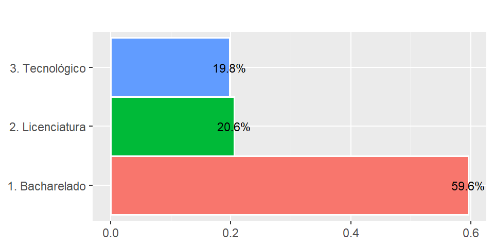

Capítulo - 2 Estatística descritiva
Técnicas para descrever e sumarizar conjuntos de dados dados de natureza diversa fazem parte da estatística descritiva. Entre estas técnicas, estão tabelas de frequências, resumos numéricos e gráficos de acordo com o tipo de variável envolvida. Neste capítulo trataremos destas técnicas sempre com foco em conjuntos de dados do Censo de Educação Superior do INEP.
2.1 Variáveis categóricas
No ramo esquerdo da figura 1.7 temos as variáveis qualitativas. Elas são em geral, variáveis em formato de texto ou números inteiros que representam atributos nominais ou ordinais de determinada observação ou indivíduo de uma base de dados. A seguir vamos apresentar algumas técnicas descritivas para este tipo de variável e para melhor exemplificar vamos trabalhar com mais algumas variáveis do conjunto de dados dos docentes do ensino superior do censo do INEP de 2017. Para mais informações sobre as variáveis consulte o dicionário de dados da base. As melhores técnicas utilizadas são para variáveis categóricas são contagens/frequências, proporções/percentuais e gráficos.
# Classes dos dados
classes <- rnp::rnp_get_classes_inep(caminho = dicionario,
aba = "DM_DOCENTE",
retorna_lista = FALSE)
# Base de dados
base <- rnp::rnp_read(base = paste0("Dados/INEP/DADOS/DM_DOCENTE.CSV"),
sep = "|",
dec = ".",
header = TRUE,
encoding = "Latin-1",
verbose = FALSE,
showProgress = FALSE)
# Aplica classes
base_docentes <- rnp::rnp_aplica_classes(base = base,
classes = classes)
# Variáveis importantes da base de Docentes
vars_doc <- c("CO_IES", "DESC_TP_CATEGORIA_ADMINISTRATIVA", "DESC_TP_SEXO",
"NU_IDADE", "DESC_TP_ESCOLARIDADE","DESC_TP_REGIME_TRABALHO",
"CO_DOCENTE","DESC_TP_SITUACAO")
base_docentes <- base_docentes %>%
dplyr::select(vars_doc) %>%
dplyr::mutate(faixaIdade = if_else(NU_IDADE <= 30, "01.Até 30 anos",
if_else(NU_IDADE <= 40, "02.Entre 30 e 40 anos",
if_else(NU_IDADE <= 50, "03.Entre 40 e 50 anos",
if_else(NU_IDADE <= 60, "04.Entre 50 e 60 anos",
"05.Acima de 60 anos"))))
) %>%
dplyr::rename(cdDocente = CO_DOCENTE,
cdIES = CO_IES,
catAdm = DESC_TP_CATEGORIA_ADMINISTRATIVA,
situacao = DESC_TP_SITUACAO,
escolaridade = DESC_TP_ESCOLARIDADE,
faixaIdade = faixaIdade,
regimeTrabalho = DESC_TP_REGIME_TRABALHO,
sexo = DESC_TP_SEXO,
idade = NU_IDADE) %>%
dplyr::arrange(faixaIdade)
rnp::rnp_atributos(base_docentes) %>%
knitr::kable(booktabs = TRUE, format = tb_formata,
caption = "Atributos da base dos docentes") %>%
kableExtra::kable_styling(latex_options = "hold_position")| classeBase | comprimento | variaveis | classeVars |
|---|---|---|---|
| data.frame | 392036 linhas e 9 colunas | cdIES | integer |
| data.frame | 392036 linhas e 9 colunas | catAdm | character |
| data.frame | 392036 linhas e 9 colunas | sexo | character |
| data.frame | 392036 linhas e 9 colunas | idade | integer |
| data.frame | 392036 linhas e 9 colunas | escolaridade | character |
| data.frame | 392036 linhas e 9 colunas | regimeTrabalho | character |
| data.frame | 392036 linhas e 9 colunas | cdDocente | integer64 |
| data.frame | 392036 linhas e 9 colunas | situacao | character |
| data.frame | 392036 linhas e 9 colunas | faixaIdade | character |
A tabela 2.1 mostra uma parte dos dados dos decentes contendo algumas variáveis que exploraremos mais adiante. Temos 392036 observações ou docentes de ensino superior no censo de 2017.
2.1.1 Tabelas de frequências
As tabelas de frequência são muito úteis para analisar a distribuição dos dados de uma variável segundo suas categorias ou classes, com elas podemos analisar contagens e proporções de cada categoria da variável. Para isso, entra em cena os seguintes conceitos:
Classe: É a descrição da categoria ou nível da variável;
Frequência absoluta (\(f_{a}\)): trata-se da contagem de observações pertencentes a uma dada categoria da variável;
Frequência relativa (\(f_{r}\)): trata-se da contagem de observações pertencentes a uma dada categoria da variável dividida pelo total \(N\) de observações. É a representação percentual da \(f_{a}\);
Frequência absoluta acumulada (\(F_{aa}\)): é dada pelo soma acumulada das \(f_{a}\);
Frequência relativa acumulada (\(F_{ra}\)): é dada pelo soma acumulada das \(f_{r}\);
OBS.: Adotamos letras maiúsculas para definir frequências acumuladas e minúscula para simples.
A junção destas estatísticas constitui uma tabela de frequências relativas que podem ser:
2.1.1.1 Tabela de frequências simples
São tabelas simples para apenas uma variável. Construímos uma função rnp_freq() para realizar a tabulação dos dados. Esta função e muitas outras podem ser encontradas no script de apoio.
rnp::rnp_freq(x = base_docentes$escolaridade,
sortd = FALSE, digits = 3) %>%
knitr::kable(booktabs = TRUE, format = tb_formata,
caption = "Frequências simples para escolaridade do docente") %>%
kableExtra::kable_styling(latex_options = "hold_position")| classe | fa | fr | Faa | Fra |
|---|---|---|---|---|
| 1. Sem graduação | 10 | 0.000 | 10 | 0.000 |
| 2. Graduação | 4613 | 0.012 | 4623 | 0.012 |
| 3. Especialização | 72301 | 0.184 | 76924 | 0.196 |
| 4. Mestrado | 154285 | 0.394 | 231209 | 0.590 |
| 5. Doutorado | 160827 | 0.410 | 392036 | 1.000 |
A tabela 2.2 exemplifica uma tabela de frequência simples onde podemos analisar diretamente os dados da variável escolaridade dos docentes de ensino superior no Brasil, segundo os dados do censo do INEP de 2017. Podemos ver que há 397.611 docentes e que destes, 39,58% possuem mestrado e 38,48% doutorado. Juntas, estas duas categorias representam 78,07% da base. Se somarmos os especialistas, temos um total de 98,52%.
2.1.1.2 Tabela de frequências de dupla entrada
Quando desejamos analisar a relação entre duas variáveis categóricas, podemos aplicar a mesma ideia da tabela de frequências simples, porém o resultado para cada estatística fica um pouco trabalhosa e em geral, é melhor analisar uma das estatísticas \(f_{a} e f_{r}\). Como a relação é bivariada, as estatísticas para \(F_{aa}, F_{ra}\) não são tão simples. Neste caso, o ideal é analisar cada variável separadamente gerando tabelas simples.
rnp::rnp_2freq(x = base_docentes$escolaridade,
y = base_docentes$sexo,
digits = 3, percents = TRUE) %>%
knitr::kable(booktabs = TRUE, format = tb_formata,
caption = "Frequências cruzadas da escolaridade por sexo do docente") %>%
kableExtra::kable_styling(latex_options = "hold_position")| Tipo | Classe X/Y | 1. Feminino | 2. Masculino | Total |
|---|---|---|---|---|
| fa | 1. Sem graduação | 3.000 | 7.000 | 10.000 |
| fr | 1. Sem graduação | 0.000 | 0.000 | 0.000 |
| fr_col | 1. Sem graduação | 0.000 | 0.000 | 0.000 |
| fr_lin | 1. Sem graduação | 0.300 | 0.700 | 1.000 |
| fa | 2. Graduação | 1848.000 | 2765.000 | 4613.000 |
| fr | 2. Graduação | 0.005 | 0.007 | 0.012 |
| fr_col | 2. Graduação | 0.010 | 0.013 | 0.012 |
| fr_lin | 2. Graduação | 0.401 | 0.599 | 1.000 |
| fa | 3. Especialização | 30579.000 | 41722.000 | 72301.000 |
| fr | 3. Especialização | 0.078 | 0.106 | 0.184 |
| fr_col | 3. Especialização | 0.170 | 0.197 | 0.184 |
| fr_lin | 3. Especialização | 0.423 | 0.577 | 1.000 |
| fa | 4. Mestrado | 73614.000 | 80671.000 | 154285.000 |
| fr | 4. Mestrado | 0.188 | 0.206 | 0.394 |
| fr_col | 4. Mestrado | 0.409 | 0.380 | 0.394 |
| fr_lin | 4. Mestrado | 0.477 | 0.523 | 1.000 |
| fa | 5. Doutorado | 73812.000 | 87015.000 | 160827.000 |
| fr | 5. Doutorado | 0.188 | 0.222 | 0.410 |
| fr_col | 5. Doutorado | 0.410 | 0.410 | 0.410 |
| fr_lin | 5. Doutorado | 0.459 | 0.541 | 1.000 |
| fa | Total | 179856.000 | 212180.000 | 392036.000 |
| fr | Total | 0.459 | 0.541 | 1.000 |
A tabela 2.3 exemplifica a utilização da tabela de frequências gerada para as variáveis escolaridade e sexo do docente. A primeira coluna da tabela representa o tipo de estatística e a visão que ela foi calculada. Por exemplo, a frequência absoluta de doutores em relação ao total da base é \(f_{a(total)} = 160.827\) que equivale à relativa \(f_{r(total)} = \frac{160.827}{392.036} = 0.410\).
Este tipo de análise também é chamada de análise marginal, pois estamos olhando as margens. Sempre que olhamos as margens estamos na verdade tomando uma das variáveis como referência e fazendo verificações sobre ela em relação à outra. É normal acontecer alguma confusão em relação às frequências. Neste caso, recomendamos analisar cada variável separadamente ou fazer as contas olhando para a tabela de frequências absolutas de dupla entrada.
2.1.2 Gráficos para uma variável categórica
Além das tabelas de frequência simples também é possível complementar a análise de variáveis categóricas através de gráficos. Os mais conhecidos são os gráficos de setores (ou pizza) e os de barras. Através destes gráficos a informação fica facilmente visível e a obtenção de informações valiosas fica evidente.
2.1.2.1 Setores
tb <- rnp::rnp_freq(base_docentes$faixaIdade, sortd = FALSE)
p <- ggplot2::ggplot(tb, aes("", fr, fill = classe))
p + ggplot2::geom_bar(width = 1, size = 1, color = "white", stat = "identity") +
ggplot2::coord_polar("y") +
ggplot2::geom_text(aes(label = paste0(round(100*fr, 1), "%")),
position = position_stack(vjust = 0.5), size=3) +
ggplot2::labs(x = NULL, y = NULL, fill = NULL, title = "") +
ggplot2::guides(fill = guide_legend(reverse = TRUE)) +
ggplot2::theme_gray() +
ggplot2::theme(axis.line = element_blank(),
axis.text = element_blank(),
axis.ticks = element_blank(),
legend.position="right", legend.text = element_text("Classe"))Figura 2.1: Gráfico de setores para faixa de idade dos docentes
Como podemos notar, a figura 2.1 é muito intuitiva para representar visualmente a distribuição de frequências das classes de uma variável categórica. Combinado com as cores de cada fatia, fica claro e objetivo a parcela de cada categoria para explicar o todo que por sua vez representa 100%.
2.1.2.2 Barras
Gráficos de barras também são intuitivos e geralmente são preferíveis em relação aos gráficos de setores. Isso ocorre porque o olho humano é mais sensível a linhas do que círculos e formas em 3D e prefere analisar figuras mais limpas. Para expandir seus conhecimentos sobre análise visual, sugerimos a (Tufte and Graves-Morris 2014).
p <- ggplot2::ggplot(tb, aes(classe, fr, fill = classe))
p + ggplot2::geom_bar(width = 1, size = 1, color = "white",
stat = "identity", show.legend = FALSE) +
ggplot2::geom_text(aes(label = paste0(round(100*fr, 1), "%")),
position = position_stack(vjust = 1), size=3) +
ggplot2::labs(x = NULL, y = NULL, fill = NULL, title = "") +
ggplot2::theme_gray() + coord_flip() +
ggplot2::theme(axis.line = element_blank())
Figura 2.2: Gráfico de barras para faixa de idade dos docentes
A figura 2.2 mostra um gráfico de barras para as faixas de idade dos docentes, nele pode-se notar que visualmente as diferenças de patemares ficam evidentes mesmo sem ter a informação em percentual em cada barra. Com isso a leitura fica mais direta e é possível comparar todas as barras simultaneamente. O eixo y contém as proporções e o eixo x a descrição de cada categoria.
2.1.3 Gráfico para duas variáveis categóricas
Vimos nas tabelas de frequência que as tabelas de dupla entrada são boas ferramentas para analisar conjuntamente a relação entre duas variáveis, mas isso também pode ser feito de forma visual.
2.1.3.1 mosaicplot
Podemos visualizar a relação entre duas variáveis categóricas ou numéricas de poucas classes, através do Gráfico de mosaico (mosaic plot). O pacote ggmosaic expande o ggplot2 para produzir este tipo de gráfico.
p <- ggplot2::ggplot(base_docentes)
p + ggplot2::theme_gray() +
ggmosaic::geom_mosaic(aes(x = product(sexo), fill = faixaIdade),
show.legend = FALSE) +
ggplot2::labs(x = NULL, y = NULL, fill = NULL, title = "") +
ggplot2::theme(axis.line = element_blank())Figura 2.3: Gráfico de mosaico para faixa de idade dos docentes por sexo
Cada coluna da figura 2.3 representa uma classe da variável sexo do docente e cada linha representa a uma classe da variável faixa de idade. Note que o cruzamento dente linhas e colunas geram retângulos que estimam a frequência de de cada cruzamento, sendo maior nos casos em que existem mais dados. Por exemplo, proporcionalmente docentes do sexo masculino acima de 60 anos são maioria nesta faixa de idade. Aliás, gráfico mostra que a proporção de docentes do sexo masculino é maior do que o feminino em todas as faixas de idade.
2.1.4 Exercícios
Para resolver os exercícios desta seção, utilize o conjunto de dados DM_CURSO.CSV presente na pasta de dados ou pacote ?rnp::dm_curso. Esta base de dados possui informações sobre os cursos das IES no censo de 2017 do INEP. Mais informações sobre as variáveis podem ser obtidas no dicionario de dados presente na pasta AJUDA/ANEXOS ou no site do INEP.
classes <- rnp::rnp_get_classes_inep(caminho = dicionario,
aba = "DM_CURSO",
retorna_lista = FALSE)
# Base de dados
base <- rnp::rnp_read(base = "Dados/INEP/DADOS/DM_CURSO.CSV",
sep = "|",
dec = ".",
header = TRUE,
encoding = "Latin-1",
verbose = FALSE,
showProgress = FALSE)
# Aplica classes
base_curso <- rnp::rnp_aplica_classes(base = base, classes = classes)
# Verifica algumas propriedades das 10 primeiras colunas.
dplyr::glimpse(base_curso[,1:10])## Observations: 35,693
## Variables: 10
## $ NU_ANO_CENSO <int> 2017, 2017, 2017, 20…
## $ CO_IES <int> 789, 4567, 2341, 670…
## $ CO_LOCAL_OFERTA <int> 1033528, 659871, 131…
## $ CO_UF <int> 14, 51, 35, 35, 53, …
## $ CO_MUNICIPIO <int> 1400100, 5107925, 35…
## $ CO_CURSO <int> 1259131, 1258115, 68…
## $ NO_CURSO <chr> "MÚSICA", "GESTÃO DE…
## $ CO_OCDE_AREA_GERAL <int> 1, 3, 3, 5, 3, 7, 4,…
## $ CO_OCDE_AREA_ESPECIFICA <int> 14, 34, 38, 52, 38, …
## $ CO_OCDE_AREA_DETALHADA <int> 146, 345, 380, 522, …DESC_TP_CATEGORIA_ADMINISTRATIVA e responda qual a taxa de cursos por IES tipo pública.
rnp::rnp_freq(base_curso$DESC_TP_CATEGORIA_ADMINISTRATIVA, digits = 3) %>%
knitr::kable(booktabs = TRUE, format = tb_formata,
caption = "ex: Frequências para categoria administrativa (cursos)") %>%
kableExtra::kable_styling(latex_options = "hold_position")| classe | fa | fr | Faa | Fra |
|---|---|---|---|---|
| 1. Pública Federal | 6538 | 0.183 | 6538 | 0.183 |
| 2. Pública Estadual | 3558 | 0.100 | 10096 | 0.283 |
| 3. Pública Municipal | 502 | 0.014 | 10598 | 0.297 |
| 4.Privada com fins lucrativos | 12488 | 0.350 | 23086 | 0.647 |
| 5. Privada sem fins lucrativos | 12523 | 0.351 | 35609 | 0.998 |
| 7. Especial | 84 | 0.002 | 35693 | 1.000 |
DESC_TP_CATEGORIA_ADMINISTRATIVA e interprete quais as categorias de maior e menor influência.
# Primeiro fazemos as frequências, depois o gráfico
tb <- rnp::rnp_freq(base_curso$DESC_TP_CATEGORIA_ADMINISTRATIVA)
p <- ggplot2::ggplot(tb, aes(classe, fr, fill = classe))
p + ggplot2::geom_bar(width = 1, size = 0.6, color = "white",
stat = "identity", show.legend = FALSE) +
ggplot2::geom_text(aes(label = paste0(round(100*fr, 1), "%")),
position = position_stack(vjust = 1), size=3) +
ggplot2::labs(x = NULL, y = NULL, fill = NULL, title = "") +
ggplot2::theme_gray() + coord_flip() +
ggplot2::theme(axis.line = element_blank()) As categorias privada com e sem fins lucrativos representam 70,1% dos dados, sendo as mais representativas. Públicas municipais são minoria (1,4%) e especial apenas (0.2%). Acho que políticas públicas para aumentar a participação de cursos especiais devem ser melhoradas.
DESC_TP_GRAU_ACADEMICO responda quais as categorias de maior e menor ocorrências de cursos. Desconsidere a categoria missing.
# As categorias diferentes de missing são: 1. Bacharelado, 2. Licenciatura e 3. Tecnológico
# missing representa 0.09% dos dados.
GrauAcad <- base_curso %>%
dplyr::transmute(GrauAcad = DESC_TP_GRAU_ACADEMICO) %>%
dplyr::filter(GrauAcad %in% c("1. Bacharelado", "2. Licenciatura", "3. Tecnológico"))
tb <- rnp::rnp_freq(GrauAcad$GrauAcad, digits = 3)
p <- ggplot2::ggplot(tb, aes(classe, fr, fill = classe))
p + ggplot2::geom_bar(width = 1, size = 0.6, color = "white",
stat = "identity", show.legend = FALSE) +
ggplot2::geom_text(aes(label = paste0(round(100*fr, 1), "%")),
position = position_stack(vjust = 1), size=3) +
ggplot2::labs(x = NULL, y = NULL, fill = NULL, title = "") +
ggplot2::theme_gray() + coord_flip() +
ggplot2::theme(axis.line = element_blank())
Como o gráfico mostra, 59,6% dos cursos são de bacharelado frente a 20,6% de licenciatura. Estamos formando poucos professores?
DESC_TP_GRAU_ACADEMICO como um gráfico de barras e interprete os reusltados para cursos tecnologicos em relação aos cursos de licneciatura.
2.2 Variáveis numéricas
Variáveis numéricas são se longe o tipo mais comum e analisável de dados, pois contemplam medidas de todo tipo de processo. Por exemplo, idade de uma pessoa em dias, peso, altura, total de pessoas em um metrô, em uma fila de cinema e por aí vai. Por permitir cálculos matemáticos, este tipo de variável tem sido estudado há milênios e portanto, boa parte das técnicas estatísticas atuais de baseiam em dados numéricos. Neste tópico abordaremos as principais medidas estatísticas cobrindo centralidade, dispersão entre outras e os principais gráficos que podem ser empregados.
2.2.1 Medidas estatísticas de centraliade
Quando olhamos um conjunto de dados de uma variável numérica logo pensamos em alguma forma de resumir estes dados para gerar algum tipo de informação. As medidas estatísticas de centralidade representam resumos numéricos que apontam para o centro do conjunto de dados. A figura 1.7 ilustra bem a ideia e também indica uma vulnerabilidade da média que são os extremos. Pontos extremos podem inserir viés no valor e na interpretação de uma média, mas para complementar a média temos a mediana, moda e quartis que veremos nos tópicos a seguir.

Figura 2.4: Na média, tudo bem
As medidas estatísticas descritas nesta seção são aplicadas a conjuntos de dados (amostras e populações) e também a distribuições de probabilidade. Para manter o tero prático deste texto, vamos focar em dados. No capitulo sobre probabilidade retornaremos o assunto no contexto das distribuições de probabilidade.
2.2.1.1 Média (\(\bar X, \mu\))
Existem muitos tipos de média como por exemplo aritmética, ponderada, geométrica e a harmônica. Em qualquer uma delas, o intuito é resumir a centralidade dos dados em relação a seus extremos dando mais ou menos peso para cada observação. Representamos a média de uma amostra pela letra latina \(\bar X\) (xis-barra) e a média populacional pela letra grega \(\mu\) e calculamos com a mesma expressão matemática.
Veremos no capítulo sobre teoria das probabilidades que a média de uma veriável aleatória \(X\) é chamada de valor esperado ou esperança (\(E[X]\)).
Média aritmética: é a soma de todos os valores e dividido pelo total deles. Ou seja, o resultado dessa divisão equivale a um valor médio entre todos os valores e é calculada por:
\[\bar X = \frac{x_1 + x_2 + x_3 + \dots + x_n}{n}, i = 1, 2, 3, \dots, n\]
onde \(x_1, x_2, x_3, \dots, x_n\) representam cada valor correspondente a um elemento \(i\) da amostra e \(n\) o total de elementos.
Este tipo de média é aplicado preferecialmente quando cada elemento tem peso igual a uma unidade, ou seja, quando não houver muita repetição.
base_ies %>%
dplyr::summarise(`Total técnicos` = mean(TotalTecnicos),
`Receita própria` = mean(ReceitaPropria),
`Depesa pesquisa` = mean(DespesaPesquisa)) %>%
knitr::kable(caption = "Média anual para dados de IES", format = tb_formata) %>%
kableExtra::kable_styling(latex_options = "hold_position")| Total técnicos | Receita própria | Depesa pesquisa |
|---|---|---|
| 168.1 | 145378180 | 886404 |
A tabela 2.5 mostra que a média da receita própria anual das IES brasileiras, segundo o censo de 2017, foi de R$ 143.468.742. Este valor parece um pouco suspeito, pois representa 85,76% do PIB (Produto Interno Bruto) do estado de pernambuco tendo 2018 como ano base, segundo dados do IBGE. Mas vamos entender adiante como investigar isso melhor.
Média aritmética ponderada: Neste caso, é assumido que cada elemento amostral tem um peso, então a média aritmética ponderada é calculada multiplicando cada valor do conjunto de dados pelo seu peso, somando tudo e dividindo pela soma de todos os pesos. Na verdade a média aritmética simples é um caso especial da ponderada quando cada peso vale 1. A média ponderada é dada por:
\[\bar X_p = \frac{p_1 \times x_1 + p_2 \times x_2 + p_3\times x_3 + \dots + p_n \times x_n}{p_1 + p_2 + p_3 + \dots + p_n}, i = 1, 2,3 \dots, n\]
sendo \(x_1, x_2, x_3, \dots , x_n\) cada valor associado a um \(i-ésimo\) elemento da amostra e \(p_1 + p_2 + p_3 + \dots + p_n\) cada peso relacionado com cada elemento da amostra.
Quando a amostra possuir muitas repetições ou precisar ser balizada por algum peso, esta média é mais recomendada.
base_ies %>%
dplyr::summarise(`Receita própria` = mean(ReceitaPropria),
`Receita própria ponderada` = weighted.mean(x = ReceitaPropria,
w = TotalTecnicos)) %>%
knitr::kable(format = tb_formata,
caption = "Média receita própria ponderada pelo total de técnicos") %>%
kableExtra::kable_styling(latex_options = "hold_position")| Receita própria | Receita própria ponderada |
|---|---|
| 145378180 | 229043797 |
Note da tabela 2.6 que a média ponderada é maior que a aritmética da tabela 2.5 e isso ocorre porque IES maiores possuem mais receita e sendo esta ponderada por um volume maior de técnicos faz com que a média suba.
A médias geométrica é mais rara, porém existem aplicações em áreas como ciências sociais como formas de estivar a expectativa de vida ao nascer, na economia como indicadores financeiros e na geometria. Assim como a média geométrica, a harmônica também é rara e possui aplicações na área da física em situações que envolvem taxas. Fica ao cargo do leitor interessado pesquisar mais sobre estas médias.
2.2.1.2 Mediana (\(M_d\))
Para compreender melhor o conceito de mediana é importante saber que ela depende da ordenação de forma crescente dos dados da variável numérica. Como se trata de números, ao ordenar os dados podemos trazer a ideia de centro. A mediana é uma medida estatística que calcula o valor central dos dados de forma que se tenha metade dos valores abaixo e metade acima da mediana. Resumindo, mediana é o valor do meio do conjunto de dados.
Quando o conjunto de dados tiver um número impar de observações, a media será o valor central e quando o comprimento for par, a mediana será a média dos dois elementos centrais. A mediana também é conhecida como uma medida resistente a pontos discrepantes.
c(0, 1, 2, 3, 4, 5, 6) qual é a mediana?
Neste caso a mediana é 3, porque a amostra tem tamanho 7 e 3 é o elemento que separa os dados 50% / 50%. No R utilizamos a função median() para calcular a mediana.
x <- c(0, 1, 2, 3, 4, 5, 6)
median(x, na.rm = TRUE)## [1] 3# OBS: na.rm remove elementos nulos da amostra, quando existiremc(2, 3, 4, 5, 6, 7) qual é a mediana?
Neste caso a mediana é \(\frac{4 + 5}{2} = 4.5\), porque a amostra tem tamanho 6 e sendo que 4 e 5 são os elementos que estão no centro.
x <- c(2, 3, 4, 5, 6, 7)
median(x, na.rm = TRUE)## [1] 4.52.2.1.3 Moda (\(M_o\))
A moda é uma medida estatística que aponta quem são os valores mais frequentes numa amostra com elementos repetidos sendo ela o valor que ocorre com maior frequência ou o valor mais comum. Quando os dados são numéricos e já estão agrupados em classes, chamamos a classe com maior frequência de classe modal e seu valor é determinado pela média dos seus extremos.
Diferentemente da média e mediana já vistas, a moda também se aplica a variáveis categóricas, uma vez que serve para identificar as classes ou valores mais frequentes.
Quando uma amostra possui apenas uma moda diz-se que ele é unimodal, sem tem duas é bimodal e se tem três ou mais é dita multimodal.
knitr::kable(rnp::rnp_freq(base_docentes$idade),
digits = 3,
booktabs = TRUE,
format = tb_formata,
caption = "Frequências para idade dos docentes das IES") %>%
kableExtra::kable_styling(latex_options = "hold_position")| classe | fa | fr | Faa | Fra |
|---|---|---|---|---|
| 19–36 | 107295 | 0.274 | 107295 | 0.274 |
| 36–43 | 95550 | 0.244 | 202845 | 0.517 |
| 43–52 | 92360 | 0.236 | 295205 | 0.753 |
| 52–99 | 96831 | 0.247 | 392036 | 1.000 |
Na tabela 2.7 vemos que a classe modal é a que contém idades entre 20 e 36 anos, pois ela representa 28,6% da amostra. Com base na classe modal, temos que \(M_o = \frac{36+20}{2} = 28\) anos.
x = {2, 5, 3, 4, 4}, y = {5,5,7,7,6,1,2,1}, z = {9,1,7,8,4} determine, quando existir e moda e sua classificação.
Uma forma de verificar se um conjunto de dados possui moda é verificar se tem algum valor que se repete ao longo da amostra. Isso pode ser feito através das funções table() e duplicated(). Enquanto a primeira faz uma tabulação dos valores ou das classes, a segunda varre a variável buscando quem são os valores que ocorrem mais de uma veze retornando TRUE, caso algum se repita. Vejamos a solução.
# Preparando os dados como vetores através da função c() e ordenando com sort()
x <- sort(c(2, 5, 3, 4, 4))
paste("x possui", x[duplicated(x)], "como moda")## [1] "x possui 4 como moda"# x é unimodal
y <- sort(c(5,5,7,7,6,1,2,1))
paste("y possui", y[duplicated(y)], "como moda")## [1] "y possui 1 como moda" "y possui 5 como moda"
## [3] "y possui 7 como moda"# y é multimodal
z <- sort(c(9,1,7,8,4))
paste("z possui", z[duplicated(z)], "como moda")## [1] "z possui como moda"# z não possui moda.As medidas de centralidade de forma geral sempre buscarão representar quais dados estão no centro ou apontando para mesmo no conjunto de dados. A figura 2.5 exemplifica um conjunto de medidas em uma linha onde a média representa o centro e os pontos as possíveis medidas realizadas.

Figura 2.5: Centralidade
2.2.1.4 Exercícios
Utilize a base de dados das IES para responder à questão a seguir.
variaveis <- c("QT_TEC_MEDIO_FEM", "QT_TEC_MEDIO_MASC",
"QT_TEC_SUPERIOR_FEM", "QT_TEC_SUPERIOR_MASC")
tb <- sapply(variaveis, function(i) {
base_ies %>%
select(i) %>%
summarise("Média" = mean(.[[i]], na.rm = TRUE),
"Mediana" = median(.[[i]], na.rm = TRUE))
}) %>%t()
knitr::kable(tb, booktabs = TRUE, format = tb_formata, digits = 3,
caption = "ex: Média e mediana técnicos (IES)") %>%
kableExtra::kable_styling(latex_options = "hold_position")| Média | Mediana | |
|---|---|---|
| QT_TEC_MEDIO_FEM | 27.2561274509804 | 6 |
| QT_TEC_MEDIO_MASC | 27.5065359477124 | 4 |
| QT_TEC_SUPERIOR_FEM | 27.8692810457516 | 6 |
| QT_TEC_SUPERIOR_MASC | 20.3729575163399 | 3 |
A tabela mostra quem média as IES possuem 27 técnicos de nível médio, masculino ou feminino com mediana de 6 para feminino e 4 para masculino. Isso significa que cerca de 50% das IES possuem até 10 (6 + 4) técnicos de nível médio. Para os técnicos de nível superior, a média feminina é superior em quase 8, sendo de 27,87 contra 20,37 dos masculinos. A mediana de mulheres se iguala àquelas com curso técnico.
2.2.2 Medidas estatísticas de dispersão
De forma simples, podemos entender medidas de dispersão como estatísticas que medem o quanto os dados estão espalhados. Desta forma, este tipo de medida é zero se os dados são todos iguais e vai aumentando à medida em que a diversidade dos dados aumenta. Estatísticas de dispersão são muito aplicadas em área como física ajudando a medir a variabilidade de medições feitas em experimentos; nas ciências biológicas estimando a variabilidade interindivíduos (membros distintos da mesma amostra são diferentes uns dos outros) e intraindivíduos (um mesmo individuo submetido a algum teste em condições distintas produzem resultados diferentes) e em muitos ramos das ciências como economia, medicina e engenharia. As principais medidas estatísticas de dispersão são Desvio padrão (\(S,\sigma\)) e Variância (\(S^2,\sigma^2\)), Amplitude, Desvio absoluto e Coeficiente de variação
2.2.2.1 Desvio padrão (\(S,\sigma\)) e variância (\(S^2,\sigma^2\))
Desvio padrão e variância são medidas que buscam estimar a dispersão dos dados em torno da sua média. Quando estamos falando de população temos o desvio padrão ou variância populacional, representados pela letra grega minúscula \(\sigma\) para desvio padrão e \(\sigma^2\) para variância. No caso de amostra, representamos pela letra latina \(S\) para o primeiro e \(S^2\) para o segundo caso.
O desvio padrão populacional é dado por:
\[{\displaystyle \sigma ={\sqrt {{\frac {1}{N}}\sum _{i=1}^{N}(X_{i}-\mu )^{2}}}}\]
em que \(X_i,i=1,2,...,N\) são os elementos da população e \(\mu\) é a média populacional.
O desvio padrão amostral é dado por:
\[{\displaystyle S_{n-1}={\sqrt {{\frac {1}{n-1}}\sum _{i=1}^{n}(X_{i}-{\overline {X}})^{2}}}}\]
em que \(X_i,i=1,2,...,n\) são os elementos da amostra e \(\bar X\) é a média amostral.
O denominador do desvio padrão amostral é \(n-1\) em vez de \(n\). Este fator de correção é conhecido como correção de Bessel (Reichmann 1961) e é aplicado porque no cálculo da média a partir da amostra, perde-se um grau de liberdade. Grau de liberdade refere-se ao total de elementos da amostra supondo que cada um é independente do outro. Como \(S\) utiliza \(\bar X\) que por sua vez está ligada com cada elemento da amostra, há epenas \(n-1\) elementos independentes após \(\bar X\) ser calculado.
A variância é o quadrado do desvio padrão. Assim:
Variância populacional é dada por
\[\sigma^2 ={{\frac {1}{N}}\sum _{i=1}^{N}(X_{i}-\mu )^{2}}\]
e a variância amostral por:
\[S_{n-1}={{\frac {1}{n-1}}\sum _{i=1}^{n}(X_{i}-{\overline {X}})^{2}}\]
Em R calculamos o desvio padrão de uma variável com a função sd() e a variância com a função var().
base_docentes %>%
dplyr::summarise(`Média` = mean(idade),
`Desvio padrão` = sd(idade),
`Variância` = var(idade))## Média Desvio padrão Variância
## 1 44.53 10.96 120.2ou diretamente com.
paste("Desvio padrão =", round(sd(base_docentes$idade), 3))## [1] "Desvio padrão = 10.963"paste("Variância =", round(var(base_docentes$idade), 3))## [1] "Variância = 120.181"- Interpretação do desvio padrão: No exemplo acima vemos que a média de idade dos docentes é de 44,2 anos com desvio padrão de 11 e variância de 120, mas o que isso significa? - A variância de idade é uma medida cuja unidade de media é \(ano^2\). Ano ao quadrado não tem interpretação direta então utilizamos o desvio padrão. Em geral quanto maior o desvio padrão mais espalhados estão os dados em relação à media. Não é conhecida uma regra generalizada para dizer se um desvio padrão é menor ou maior, porém, com base na teoria das probabilidades temos uma regra de ouro que é aplicada sempre que a curva dos dados segue uma distribuição Normal (por hora, epenas aceite, veremos ela mais adiante!).

Figura 2.6: Centralidade
Conforme vemos na figura 2.6, em torno da média mais ou menos um desvio padrão devem estar 68,27% dos dados, já entre a média mais ou menos 2 desvios padrão deve estar 95,45% dos dados. Seguindo esta lógica, a interpretação deve levar em conta a distribuição dos dados e a precisão que o experimento ou estudo exige. Assim, sendo no nosso exemplo a média de idade dos docentes é 44,2 então entre \(44,2 \pm 11 = (33.4-55.4)\) devem estar 68,27% dos docentes.
2.2.2.2 Amplitude
A amplitude de um conjunto de dados ordenado é a distância entre o menor e o maior valor. Na figura 2.5 se seus valores estiverem ordenados do maior para o menor, a amplitude seria o ponto mais à direita Máximo menos o ponto mais à esquerda Mínimo.
Representamos um conjunto de dados ordenado da seguinte forma.
\[X_{(1)}\leq X_{(2)}\leq X_{(3)}\leq \cdots \leq X_{(n-1)}\leq X_{(n)}\] Assim, sendo podemos expressar a amplitude ou range por
\[R = X_{(n)} - X_{(1)} = Max(X) - Min(X)\]
# Ordenando os dados do menor para o maior
idade <- sort(base_docentes$idade, decreasing = FALSE)
# obtendo o menor e o maior valor
menor <- idade[1]
maior <- idade[length(idade)]
R1 <- maior - menor
# ou pelo minimo e máximo dos dados
R2 <- max(idade) - min(idade)
paste("As duas medidas são iguais?", all.equal(R1,R2))## [1] "As duas medidas são iguais? TRUE"c(R1,R2)## [1] 80 802.2.2.3 Coeficiente de variação \(cv\)
Esta medida estatística muitas vezes é chamada de desvio padrão relativo e é uma medida padronizada de dispersão. Em alguns contextos é possível optar pelo cv ao invés do desvio padrão. Quanto maior for o coeficiente de variação, maior será a dispersão nos dados em torno da média. O cv é divisão entre o desvio padrão e a média e pode ser calculado pela seguinte expressão.
\[cv_{amostral} = \frac{S}{\bar X}\]
\[cv_{populacional} = \frac{\sigma}{\mu}\]
Vale salientar que o cv e o desvio padrão se aplicam a dados estritamente positivos.
- Interpretação: por ser uma medida adimensional, o cv é uma medida prática para interpretar a variabilidade entre dois conjuntos de dados de tipos diferentes e pode ser interpretada em termos percentuais. Veja o exemplo a seguir.
base_ies %>%
dplyr::summarise(`Média receita` = mean(ReceitaPropria),
`Média técnicos` = mean(TotalTecnicos),
`CV receita` = sd(ReceitaPropria) / mean(ReceitaPropria),
`CV técnicos` = sd(TotalTecnicos) / mean(TotalTecnicos)) %>%
round(., digits = 3)## Média receita Média técnicos CV receita CV técnicos
## 1 145378180 168.1 2.867 3.475Os cálculos mostram uma enorme variabilidade dos dados das IES, pois o cv para receita é 286% e para total de técnicos é 347%. Neste caso, temos indicativos de que a dispersão dos dados é grande. Isso pode ser explicado pelo tamanho das IES. Por exemplo, as federais são minoria na base de dados, mas possuem grande quantidade de técnicos e alto aporte de receita, enquanto as IES menores, geralmente privadas possuem menor número de técnicos e menor receita. Estados como São Paulo apresentam número muito grandes em relação ao restante do país.
2.2.3 Outras medidas
Existem muitas estatísticas úteis para analisar dados numéricos que nem sempre são exploradas, entre elas temos os quartis, decis, percentis e amplitude interquartis.
2.2.3.1 Quartis, decis e percentis
- Quartis: Chamamos de quartil qualquer uma das três medidas que separam um conjunto de dados ordenado em q partes iguais. Quartil vem de 1/4 (um quarto dos dados). A mediana que já vimos representa o segundo quartil. Costumamos representar os quatis pela letra Q seguida de um número tais como:
- \(Q1\): primeiro quartil representa 25% da amostra ordenada;
- \(Q2\): segundo quartil ou mediana representa 50% da amostra ordenada;
- \(Q3\): terceiro quartil representa 75% da amostra ordenada;
Decil: O raciocínio é o mesmo dos quatis. Decis são medidas que dividem o conjunto de dados em 10 partes iguais. O primeiro decil representa 10% dos dados, o segundo 20% e assim por diante.
Percentil: Percentis semelhante aos decis, os percentis dividem o conjunto de dados em 100 partes iguais.
Para obter estas estatísticas seguimos o mesmo racional da mediana, dividindo os dados em partes iguais e identificando os elementos do centro e borda. No R os podemos calcular facilmente estas estatísticas pela função quantile() para qualquer tamanho de faixa e por summary() para os quartis. Sempre que desejar fazer um raio-x dos dados é sugerido fazer uma análise de quartil, decil ou percentil, pois desta forma ficará evidente qualquer anomalia nos dados.
2.2.3.2 Amplitude interquartil
A amplitude interquartil ou do inglês InterQuartile Range (IQR) é a medida de distância ou range entre o primeiro quartil \(Q_1\) e o terceiro \(Q_3\), sua importância reside no fato de que ela representa os 50% dos dados centrais do conjunto de dados.
\[IQR = Q_3-Q_1\]
Junto com esta estatística surge também dois conceitos importantes que são os limites superiores \(LS\) e inferiores \(LI\) para decidir se determinado ponto é discrepante ou não. Uma dada medida é dita discrepante ou outlier quando ela está muito diferente da maioria das medidas realizadas. É demonstrado que no intervalo determinado por \(LI=Q_1-1.5 \times IQR\) e \(LS=Q_3+1.5 \times IQR\) temos 99% dos dados, assim qualquer valor que cair fora deste intervalo em geral, pode ser chamado de outlier.
base_docentes %>%
dplyr::summarise(Q1 = quantile(idade, probs = 0.25),
Q2 = quantile(idade, probs = 0.50),
Q3 = quantile(idade, probs = 0.75),
IQR = Q3 - Q1,
LI = Q1 - 1.5*IQR,
LS = Q3 + 1.5*IQR,
Noutliers = sum(idade > LS),
Ntotal = n(),
Pct = Noutliers / Ntotal) ## Q1 Q2 Q3 IQR LI LS Noutliers Ntotal Pct
## 1 36 43 52 16 12 76 951 392036 0.002426Conforme a analise acima, vemos que apenas \(\frac{951}{392036} = 0,24\%\) dos docentes são outliers possuindo idade acima de 76 anos.
Outliers possuem grande importância na estatística e nunca devem ser negligenciados, pois podem trazer informação valiosa para a análise. Existem muitas técnicas de detecção de outiers mais robustas que esta que vimos a partir dos quartis. Ao leitor interessado ver (Barnett and Lewis 1974) e para uma visão baseada em R ver (Komsta 2011).
2.2.3.3 Os cinco números
Os cinco números são um conjunto de estatísticas composto por \(Min, Q_1,Q_2,Q_3\) e \(Max\), estas cinco estatísticas costumam ser suficientes para analisar a distribuição dos dados pois junta as estatísticas mais importantes, a mediana representando uma medida de centralidade, os quartis \(Q1,Q3\) representado medidas de dispersão e o mínimo e máximo que representam o range dos dados.
É comum em estatística, juntarmos em uma tabela as principais estatísticas de uma variável numérica para interpretar sua relevância no contexto do estudo ou experimento em questão. Além do resumo dos cinco números, podemos acionar outras estatísticas de nosso interesse. A função rnp_summary() em conjunto com rnp_freq() nos auxiliarão em muitas análises no curso deste livro.
2.2.3.4 Exercícios
Ainda na base das IES, analise através de estatísticas de dispersão as questões a seguir.
VL_DESPESA_PESSOAL_DOCENTE. Interprete estatísticas de dispersão para esta variável.
tb <- rnp::rnp_summary(base_ies$VL_DESPESA_PESSOAL_DOCENTE)[-c(1:3)]
knitr::kable(t(tb), booktabs = TRUE, format = tb_formata, digits = 3,
caption = "ex: Média e mediana técnicos (IES)") %>%
kableExtra::kable_styling(latex_options = "hold_position")| Min | Q1 | Media | Mediana | Q3 | Max | DevPad | IQR | cv |
|---|---|---|---|---|---|---|---|---|
| 1 | 696484 | 66328326 | 3295507 | 37257632 | 7600039210 | 242807546 | 36561148 | 3.661 |
NO_IES e VL_RECEITA_PROPRIA ordenada da maior para a menor.
base_ies %>%
dplyr::transmute(NomeIES = NO_IES, ReceitaPropria = VL_RECEITA_PROPRIA) %>%
dplyr::arrange(desc(ReceitaPropria)) %>%
head(n = 10)## NomeIES
## 1 FACULDADE DE ADMINISTRAÇÃO, CIÊNCIAS, EDUCAÇÃO E LETRAS
## 2 FACULDADE MAURÍCIO DE NASSAU DE MOSSORÓ
## 3 FACULDADE MAURÍCIO DE NASSAU DE MACEIÓ
## 4 Faculdade Fernanda Bicchieri
## 5 FACULDADE ESTÁCIO DE SÁ DE VILA VELHA
## 6 FACULDADE ESTÁCIO DE SÁ DE CAMPO GRANDE
## 7 FACULDADE ESTÁCIO DE SÁ DE GOIÁS
## 8 CENTRO UNIVERSITÁRIO ESTÁCIO JUIZ DE FORA - ESTÁCIO JUIZ DE FORA
## 9 UNIVERSIDADE ESTÁCIO DE SÁ
## 10 FACULDADE ESTÁCIO DE SÁ DE OURINHOS
## ReceitaPropria
## 1 6248050290
## 2 4434457964
## 3 4024118925
## 4 4000452319
## 5 3131607366
## 6 3131607366
## 7 3131607366
## 8 3131607366
## 9 3131607366
## 10 31316073662.2.4 Gráficos para uma variável numérica
Existem muitos tipos de gráficos, porém para uma variável listamos os três que consideramos mais importantes.
2.2.4.1 Histogramas
Os histogramas são um tipo de gráfico de barras para variáveis numéricas e servem principalmente para analisar visualmente a centralidade e dispersão dos dados. No processo de construção do histograma, os dados são categorizados em classes e as frequências são contadas. No eixo horizontal geralmente são mostradas as classes e eixo vertical as frequências que podem ser absolutas ou relativas.
p <- ggplot2::ggplot(base_docentes, aes(x = idade))
p + ggplot2::theme_gray() +
ggplot2::geom_histogram(colour='white', bins = 10) +
ggplot2::labs(y = "Frequência", x = "Faixa de idade", fill = NULL, title = "") +
ggplot2::scale_x_continuous(
breaks=seq(10, 90, 10),
labels = seq(10, 90, 10)
) +
ggplot2::theme(axis.line = element_blank())Figura 2.7: Histograma idade do docente
Veja que a figura 2.7 evidencia que as maiores concentrações de docentes estão nas faixas de idade entre 30 e 50 anos.
2.2.4.2 Densidade
Gráficos de densidade possuem aplicação semelhante aos histogramas, porém são mais indicados pata amostras grandes. Ele evidenciam a melhor curva que representam os dados. Este tipo de gráfico nos ajuda também a verificar a distribuição de probabilidade aproximada que os dados podem seguir.
p <- ggplot2::ggplot(base_docentes, aes(x = idade))
p + ggplot2::theme_gray() +
ggplot2::geom_density(adjust = 1) +
ggplot2::labs(y = "Densidade", x = "Idade", fill = NULL, title = "") +
ggplot2::scale_x_continuous(
breaks=seq(10, 90, 10),
labels = seq(10, 90, 10)) +
ggplot2::theme(axis.line = element_blank())Figura 2.8: Densidade idade do docente
Perceba na figura 2.7 como esperado, que a densidade dos dados está concentrada idade entre 30 e 50 anos. Porém, ela aponta uma elevação próxima a 50 anos apontando comportamento bimodal nos dados.
2.2.4.3 Box-Plot
De longe o gráfico Box-plot ou para muitos, diagrama de caixa é o tipo mais completo de gráfico para variável numérica.

Figura 2.9: Definindo um Box-plot
A figura 2.9 ilustra os elementos que compõem um Box-plot. Perceba que visualmente ele contempla as estatísticas \(Q_1\), \(Q_2\) (mediana), \(Q_3, IQR, LI,LS\) e outliers. Com base nestas estatísticas, uma variável numéricas estará bem caracterizada.
p <- ggplot2::ggplot(base_docentes, aes(y = idade))
p + ggplot2::theme_gray() +
ggplot2::geom_boxplot(adjust = 1) +
ggplot2::labs(x = "", y = "Idade", fill = NULL, title = "") +
ggplot2::coord_flip() +
ggplot2::theme(axis.line.x = element_line(),
axis.text.x = NULL,
axis.line.y = element_blank())Figura 2.10: Box-plot idade do docente
Conforme vimos antes, idades acima de 76 anos são pontos atípicos na base de docentes, por isso no Box-plot estes pontos aparecem fora do limite superior de outliers na figura 2.19.
2.2.5 Gráficos para duas variáveis numéricas
Os principais gráficos para analisar a relação entre duas variáveis são o gráfico de pontos ou scatterplot e o gráfico de linhas, através deles é possível analisar a relação conjunta entre as variáveis e determinar se uma influencia a outra de alguma forma. além destes, também podemos traçar gráficos de densidade para comparar as duas curvas.
2.2.5.1 scatterplot
O gráfico de pontos é um gráfico bidimensional onde cada eixo representa os valores de uma variável. Este tipo de gráfico é ótimo para analisar a correlação de duas variáveis bem como sua dispersão, pois cada ponto representa a ligação dos elementos das duas variáveis.
p <- base_ies %>%
dplyr::filter(ReceitaPropria <= 10000000) %>%
ggplot2::ggplot(aes(x = TotalTecnicos, y = ReceitaPropria))
p + ggplot2::theme_gray() +
ggplot2::geom_point() +
ggplot2::labs(x = "Total técnicos", y = "Receita própria", fill = NULL, title = "") +
ggplot2::theme(axis.line.x = element_line(),
axis.text.x = NULL,
axis.line.y = element_blank())Figura 2.11: Gráfico de pontos total de técnicos versus receita própria
2.2.5.2 Grafico de linhas
O gráfico de linhas possui aplicação para duas variáveis contínuas e também para séries temporais, onde um dos eixos é uma variável numérica de data.
p <- base_ies %>%
dplyr::filter(TotalTecnicos < 100) %>%
ggplot2::ggplot(aes(x = TotalTecnicos, y = ReceitaPropria))
p + ggplot2::theme_gray() +
ggplot2::geom_line() +
ggplot2::labs(x = "Total técnicos", y = "Receita própria",
fill = NULL, title = "") +
ggplot2::theme(axis.line.x = element_line(),
axis.text.x = NULL,
axis.line.y = element_blank())Figura 2.12: Gráfico de pontos total de técnicos (<50) versus receita própria
2.3 Variáveis categóricas versus numéricas
O trabalho estatístico muitas vezes exige que alguma variável numérica seja categorizada ou analisada em conjunto com alguma variável categórica. Todas as técnicas vistas até agora, tanto as medidas estatísticas quanto os gráficos podem ser analisados em conjunto para gerar informação.
2.3.1 Categorizando variáveis numéricas.
Em R podemos agrupar uma variável numérica de muitas formas, umas delas é através das estatísticas de quartis, decis ou percentis dependendo do tamanho da base, com a função quantile() combinada com a função cut(). Outra forma é através do conhecimento próprio do analista com os operadores relacionais do R: <, >, >=, <=, ==, !=, %in% combinadas com ifelse().
## Categorizando por quartis
fx_receita_q <- cut(base_ies$ReceitaPropria,
breaks = round(quantile(base_ies$ReceitaPropria)),
dig.lab = 10, include.lowest = TRUE)
rnp::rnp_freq(fx_receita_q, sortd = FALSE) %>%
knitr::kable(digits = 3,
booktabs = TRUE, format = tb_formata,
caption = "Categorização por quartis") %>%
kableExtra::kable_styling(latex_options = "hold_position")| classe | fa | fr | Faa | Fra |
|---|---|---|---|---|
| 0–1389966 | 612 | 0.25 | 612 | 0.25 |
| 1389966–7429221 | 612 | 0.25 | 1224 | 0.50 |
| 7429221–61258594 | 612 | 0.25 | 1836 | 0.75 |
| 61258594–6248050290 | 612 | 0.25 | 2448 | 1.00 |
## Categorização por ifelse com operadores relacionais
fx_receita_r <- ifelse(base_ies$ReceitaPropria <= 1200000, "A.-1200000",
ifelse(base_ies$ReceitaPropria <= 5000000, "B.1200000 a 5000000",
ifelse(base_ies$ReceitaPropria <=35000000, "C.5000000 a 35000000","D.35000000+")))
rnp::rnp_freq(fx_receita_r, sortd = FALSE) %>%
knitr::kable(digits = 3,
booktabs = TRUE, format = tb_formata,
caption = "Categorização por operadores relacionais") %>%
kableExtra::kable_styling(latex_options = "hold_position")| classe | fa | fr | Faa | Fra |
|---|---|---|---|---|
| A.-1200000 | 571 | 0.233 | 571 | 0.233 |
| B.1200000 a 5000000 | 500 | 0.204 | 1071 | 0.438 |
| C.5000000 a 35000000 | 635 | 0.259 | 1706 | 0.697 |
| D.35000000+ | 742 | 0.303 | 2448 | 1.000 |
No primeiro caso, criamos os cortes utilizando os quartis da variável e em seguida passamos estes cortes para a função cut() que por sua vez particionou a variável de acor com as partes informadas pelo argumento breaks. Desta forma fica mais rápido a categorização, mas o analista não tem como personalizar as faixas. Para atender a esta limitação o segundo método ajuda a customizar as faixas de acordo com a preferência ou necessidade. Embora exija um pouco mais de código, esta última opção é mais flexível.
2.3.2 Medidas estatísticas por agrupamento
Em muitas situações da análise de dados, estamos interessados em analisar a influência de uma variável categórica sob uma ou mais variáveis numéricas. Felizmente, a grande maioria das medidas estatísticas aprendidas até agora se aplicam a este tipo de análise que exige estatísticas agrupadas.
base_docentes %>%
dplyr::group_by(escolaridade) %>%
dplyr::summarise(N = n(),
Min = min(idade),
Q1 = unname(quantile(idade, probs = 0.25)),
Me = mean(idade),
Md = median(idade),
Q3 = unname(quantile(idade, probs = 0.75)),
Max = max(idade)
#Dp = sd(idade),
#cv = sd(idade)/mean(idade)
) %>%
knitr::kable(digits = 2,
booktabs = TRUE, format = tb_formata,
caption = "Estatísticas descritivas idade vs escolaridade") %>%
kableExtra::kable_styling(latex_options = "hold_position")| escolaridade | N | Min | Q1 | Me | Md | Q3 | Max |
|---|---|---|---|---|---|---|---|
| 1. Sem graduação | 10 | 23 | 47.25 | 52.60 | 54 | 63 | 66 |
| 2. Graduação | 4613 | 20 | 27.00 | 37.78 | 33 | 45 | 94 |
| 3. Especialização | 72301 | 19 | 35.00 | 43.01 | 41 | 50 | 93 |
| 4. Mestrado | 154285 | 22 | 34.00 | 42.81 | 41 | 50 | 90 |
| 5. Doutorado | 160827 | 19 | 38.00 | 47.06 | 46 | 54 | 99 |
Em \(Q3\) temos que 75% dos docentes com Doutorado possuem idade até 54 anos. Vemos também alguns doutores excepcionais com idade mínima de 19 anos. A idade máxima registrada foi de 99 anos presente no grupos dos doutores. A categoria sem graduação tem dez indivíduos e é pouco representativa.
# Como nossa rnp_summary, poderiamos fazer assim
aggregate(idade ~ escolaridade,
data = base_docentes,
FUN = function(i) rnp::rnp_summary(i))2.3.3 Gráficos para categóricas vs numéricas
Com apoio do pacote ggplot podemos combinar a maioria dos gráficos vistos até agora para analisar dados por grupo ou classes. Como citamos na seção 1.6 uma das ferramentas estatísticas é a análise bivariada e ela pode ser feita entre duas variáveis podendo ser de mesmo tipo ou de tipos diferentes
- Box-plot agrupado: Box-plots por categoria são muito informativos uma vez que resumem sete estatísticas fundamentais de uma variável continua conforma já vimos.
p <- base_docentes %>%
ggplot2::ggplot(aes(x = escolaridade, y = idade, fill = escolaridade))
p + ggplot2::theme_gray() +
ggplot2::geom_boxplot(show.legend = FALSE) +
ggplot2::coord_flip()+
ggplot2::theme(axis.line.x = element_line(),
axis.text.x = NULL,
axis.line.y = element_blank())Figura 2.13: Box-plot de idade vs escolaridade
No Box-plot conseguimos ver que docentes com graduação apenas são minoria como visto na tabela e doutores são maioria. Notamos também que, com exceção daqueles sem graduação todos os grupos possuem dispersão parecida uma vez que a distância entre \(Q_1\) e \(Q_3\) é pequena.
Para todos os graficos agrupados também é possível quebrar a visualização em um gráfico por categoria adicionando uma terceira variável com facet_wrap() .
p <- base_docentes %>%
ggplot2::ggplot(aes(x = sexo, y = idade, fill = escolaridade))
p + ggplot2::theme_gray() +
ggplot2::geom_boxplot(show.legend = FALSE) +
ggplot2::coord_flip()+
ggplot2::facet_wrap(escolaridade~.)+
ggplot2::theme(axis.line.x = element_line(),
axis.text.x = NULL,
axis.line.y = element_blank())Figura 2.14: Box-plot de idade vs escolaridade por sexo
- Gráfico de densidade agrupado: é possível comparara várias curvas simultaneamente no mesmo gráfico para analisar a distribuição dos dados.
p <- base_docentes %>%
ggplot2::ggplot(aes(x = idade, fill = escolaridade))
p + ggplot2::theme_gray() +
ggplot2::geom_density(alpha = 0.6) +
ggplot2::theme(legend.position = "right") +
ggplot2::theme(axis.line.x = element_line(),
axis.text.x = NULL, axis.line.y = element_blank()) +
ggplot2::labs(x = "Idade", y = "Densidade", fill = NULL, title = "")Figura 2.15: Densidade de idade vs escolaridade
O resultado é um gráfico elegante e que indica precisamente a forma da distribuição dos dados.
Agora quebrado por sexo.
p <- base_docentes %>%
ggplot2::ggplot(aes(x = idade, color = sexo, fill = escolaridade))
p + ggplot2::theme_gray() +
ggplot2::geom_density(alpha = 0.6, show.legend = FALSE) +
ggplot2::facet_wrap(~escolaridade)+
ggplot2::theme(axis.line.x = element_line(),
axis.text.x = NULL,
axis.line.y = element_blank()) +
ggplot2::labs(x = "Idade", y = "Densidade", fill = NULL, title = "")Figura 2.16: Densidade de idade vs escolaridade por sexo
- Gráfico de colunas agrupadas: é possível assim, como nos dois últimos exemplos, gerar gráficos e coluna agrupadas e fazer a quebra adicionando uma terceira variável.
p <- base_docentes %>%
ggplot2::ggplot(aes(x = escolaridade, y = idade, fill = sexo))
p + ggplot2::theme_gray() +
ggplot2::geom_col(show.legend = TRUE, position = "dodge") +
ggplot2::theme(legend.position = "bottom") +
ggplot2::coord_flip()+
ggplot2::theme(axis.line.x = element_line(),
axis.text.x = NULL,
axis.line.y = element_blank())Figura 2.17: Colunas de idade vs escolaridade por sexo
- Histogramas agrupados: Histogramas também são agrupáveis segundo as categorias da variável.
p <- base_docentes %>%
ggplot2::ggplot(aes(x = idade, fill = escolaridade))
p + ggplot2::theme_gray() +
ggplot2::geom_histogram(bins = 10, show.legend = FALSE) +
ggplot2::facet_wrap(.~escolaridade)+
ggplot2::theme(axis.line.x = element_line(),
axis.text.x = NULL,
axis.line.y = element_blank())Figura 2.18: Histograma de idade vs escolaridade
2.4 Covariância e correlação
Na análise bivariada de variáveis numéricas a covariância e a correlação tem papel fundamental. Ambas se assemelham pelo fato de que medem a direção da relação entre duas variáveis ao longo de seus pontos. As relações mais comuns são ambas as variáveiscrescem, ambas decrescem, uma decresce e a outra cresce. A diferença mais significativa entre a covariância e a correlação é que a primeira oferece um valor absoluto variando de acordo com os dados, graças a isso não tem como estimar a força de uma relação linear. É aí que entra a correlação. Em R a covariância pode ser calculada por var() e cov() e a correção por cor() e se aplica a bases com mais de 2 variáveis numéricas.
2.4.1 Covariância
O conceito de covariância pode ser aplicado tanto a conjunto de dados como a variáveis aleatórias. Quando aplicada a duas variáveis \(X\) e \(Y\) é expressa por:
\[Cov(X,Y) = \frac {\sum_{i=1}^N(X_i-\bar X)(Y_i - \bar Y)}{N-1}, i=1,..,N\]
Sendo que \(\bar X\) e \(\bar Y\) são as médias das variáveis X e Y.
TotalTecnicos e ReceitaProprianos dados das IES
base_ies %>%
dplyr::select(TotalTecnicos, ReceitaPropria) %>%
cov() %>%
knitr::kable(booktabs = TRUE, format = tb_formata,
caption = "Análise de covariância") %>%
kableExtra::kable_styling(latex_options = "hold_position")| TotalTecnicos | ReceitaPropria | |
|---|---|---|
| TotalTecnicos | 341089 | 14066046853 |
| ReceitaPropria | 14066046853 | 173738053485884832 |
Note que os números são extremamente grandes e tudo que podemos tirar é que a covariância é positiva entre as duas variáveis, mas não conseguimos estimar a força desta relação.
Os elementos da diagonal principal da matriz de covariâncias representam a variãncia de cada variável e os valores fora da diagonal são covariâncais. A matriz é espelhada e para interpretá-la basta ler acima ou abaixo da diagonal principal.
2.4.2 Correlação
A correlação linear ou de Pearson é uma estatística padronizada que varia de \(-1\) a \(1\) e expressa a relação linear entre duas variáveis numéricas. A correlação é expressa pela letra grega \(\rho\) e é dada pela seguinte expressão matemática:
\[\rho = \frac {\sum_{i=1}^N(X_i-\bar X)(Y_i - \bar Y)}{\sqrt{\sum_{i=1}^N(X_i-\bar X)^2} \times \sqrt{\sum_{i=1}^N(Y_i-\bar Y)^2}}=\frac{Cov(X,Y)}{\sqrt{S^2(X) \times S^2(Y)}}, \\ i=1,..,N\]
Em resumo, esta formula aparentemente complicada diz que a correlação é resultado da covariância dividida pela raiz quadrada do produto das variâncias de cada variável.

Figura 2.19: Tendência da correlação
A figura 2.19 ilustra a relação entre duas variáveis \(X\) e \(Y\). Da esquerda para a direita temos correlação linear negativa forte (tende a \(-1\)), correlação fraca (tende a \(0\)) e correlação linear positiva forte (tende a \(+1\)).
Como regra geral, costuma-se considerar a distribuição expressa na tabela 2.13 para interpretar a correlação. A mesma se aplica para negativa ou positiva bastando apenas dizer estar alerta ao sinal de \(\rho\).
| Faixa | Interprecao |
|---|---|
| 0.00–0.19 | muito fraca |
| 0.20–0.39 | fraca |
| 0.40–0.69 | moderada |
| 0.70–0.89 | forte |
| 0.90–1.00 | muito forte |
DespesaPesquisa.
base_ies %>%
dplyr::select(TotalTecnicos, ReceitaPropria, DespesaPesquisa) %>%
cor(method = "pearson") %>%
round(digits = 3) %>%
knitr::kable(booktabs = TRUE, format = tb_formata,
caption = "Análise de correlação") %>%
kableExtra::kable_styling(latex_options = "hold_position")| TotalTecnicos | ReceitaPropria | DespesaPesquisa | |
|---|---|---|---|
| TotalTecnicos | 1.000 | 0.058 | 0.292 |
| ReceitaPropria | 0.058 | 1.000 | 0.064 |
| DespesaPesquisa | 0.292 | 0.064 | 1.000 |
Note agora que faz mais sentido estimar a força da relação linear entre as variáveis utilizando a correlação. No nosso exemplo, uma correlação linear de 0.047 entre TotalTecnicos e ReceitaPropria nos diz que a relação linear entre estas duas variáveis é muito fraca. O mesmo se aplica à variável DespesaPesquisa em relação à variável TotalTecnicos com 0.190. Estas três variáveis não possuem correlação forte entre si.
Referências
Tufte, Edward, and P Graves-Morris. 2014. “The Visual Display of Quantitative Information.; 1983.”
Reichmann, WJ. 1961. “Use and Abuse of Statistics: Methuen.” 1961.
Barnett, Vic, and Toby Lewis. 1974. Outliers in Statistical Data. Wiley.
Komsta, Lukasz. 2011. Outliers: Tests for Outliers. https://CRAN.R-project.org/package=outliers.